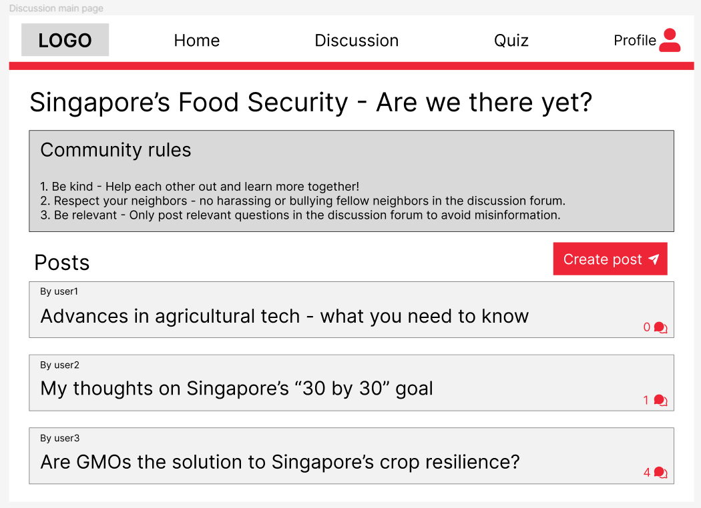
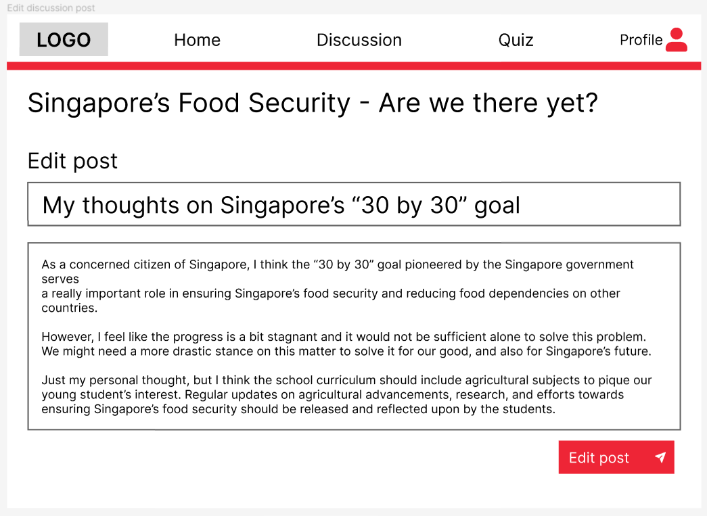

Singapore's Food Security - Discussion Forum
As part of a web development project, my team created a platform for discussing Singapore's food security. My role was focused on developing the discussion forum, implementing full CRUD (Create, Read, Update, Delete) functionality to manage posts efficiently.
The backend was built using Node.js and Express.js, with a well-structured database designed in Microsoft SQL Server (MSSQL). This project highlighted the importance of collaborative dialogue in addressing key societal issues, supported by robust backend technology.